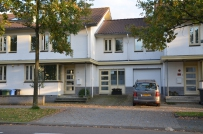

Korte geschiedenis van onze praktijk
Onze praktijk is in 2007 gestart door Ingrid Raven. Sinds 2007 is de praktijk flink gegroeid en inmiddels begeleiden wij al 8 jaar lang ongeveer 50 leerlingen in de week. In de loop van de tijd zijn er twee collega’s bijgekomen: Marjolie van Essen en Jolanda Westermann. Met zijn drieën werken wij met veel plezier in onze praktijk en zijn wij er iedere keer weer getuige van dat kinderen weer plezier krijgen in het leren en goede resultaten boeken.
De praktijk bevindt zich in Amersfoort-Noord in de wijk Nieuwland. Wij beschikken over een prettige praktijkruimte en een wachtruimte, zodat u tijdens de begeleiding op uw kind kunt wachten. Sinds april 2015 behandelen wij ook kinderen in onze nieuwe praktijk in Vathorst.
Activiteiten
Onze praktijk begeleidt kinderen uit het basisonderwijs en uit het voortgezet onderwijs. Onze leerlingen komen uit Amersfoort, Hoogland, Leusden, Achterveld, Nijkerk en Hoevelaken. We hebben een goed contact met veel scholen en komen graag langs op school om overleg te hebben over de afstemming van onze begeleiding met de hulp op school. Samen bereiken we meer!
Wij geven trainingen aan schoolteams, IB-ers en zorgcoördinatoren van scholen. Het gaat dan bijvoorbeeld om trainingen op het gebied van dyslexie en dyscalculie zodat scholen hun aanbod voor leerlingen kunnen verbeteren en aanpassen. Ook geven wij training op het gebied van ondersteunende software voor kinderen met leerproblemen.
Wij verzorgen de dyslexiescreening van brugklassers van een grote middelbare school in Amersfoort. De kinderen worden de eerste maanden op school getoetst en wij verzorgen de analyse en geven handvatten voor de begeleiding.